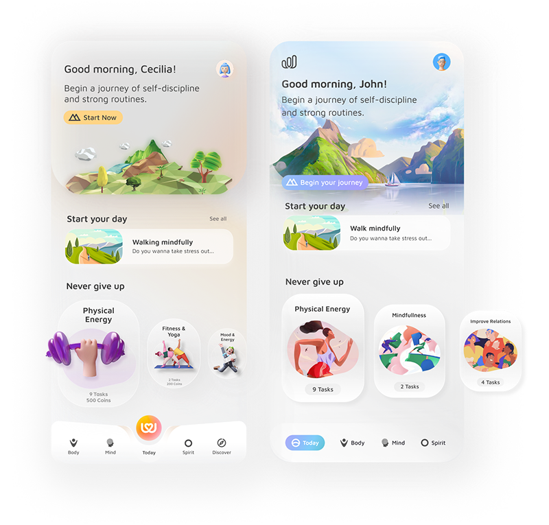

Wannawell - Concept Design Mobile App Project
Holistic Wellness ApplicationWannawell is a digital wellness coach that guides body, mind and spirit to increase the level of life quality and achieve optimal health.
Responsibilities:
I designed the project’s visual identity, including the logo, and created all UI screens, buttons, icons,
and reusable components.

Scope
The goal of this project was to design an e-commerce experience for Troya Space Saving Furniture that addresses the needs of tiny house and small flat owners seeking affordable, space-saving solutions. The platform focuses on helping users easily explore furniture options tailored to different areas of the home, while providing inspiration for efficient living. By leveraging Troya’s diverse product range, the experience aims to simplify decision-making and support users in optimizing their limited space. The overall approach combines functionality with inspiration, turning the website into both a shopping and discovery platform.
Golden Circle
What
Wannawell is a digital wellness coach that guides body, mind and spirit to increase the level of life quality and achieve optimal health.
How
Wannawell accompanies users in their wellbeing journey via goal-oriented, personalised challenges, habit building activities, community support and scientifically-proven content prepared by experts.
Why
With 15 years of experience, Wannawell improves the quality of life through a holistic approach and creates healthy habits for life.